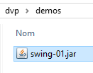
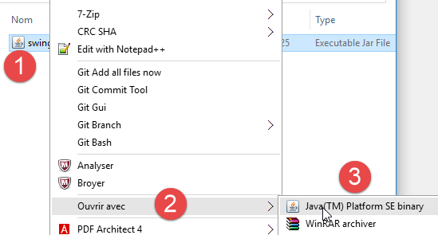
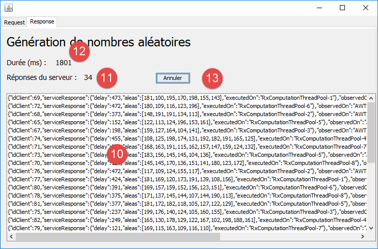
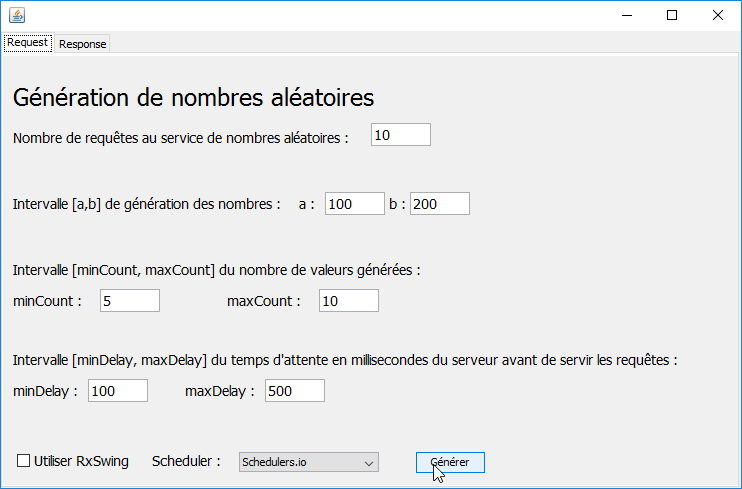
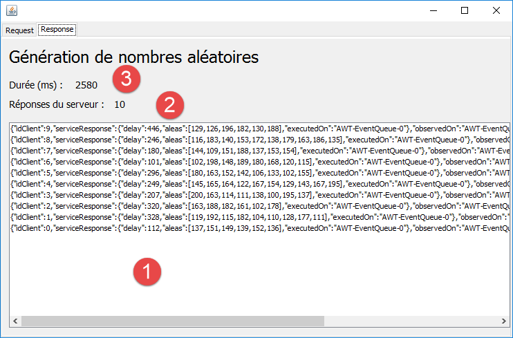
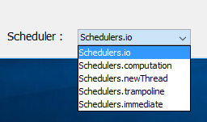
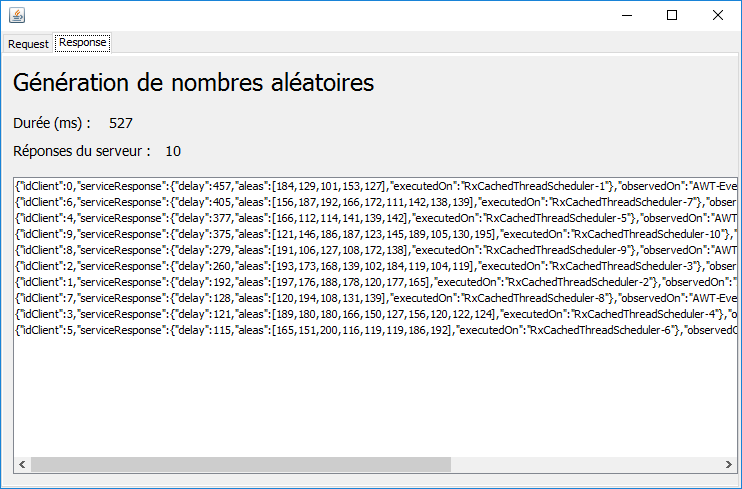
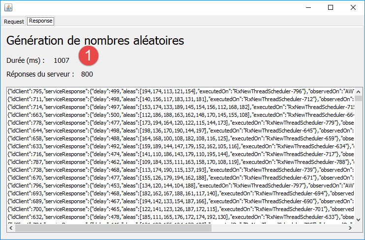

2. 一个入门示例
我最初接触 RxJava 是通过网络上的课程和教程。除了理论部分使用了一些我不熟悉且难以理解的概念外，我更看不出来它在现实生活中有什么用处。 因此，我们将首先介绍一个示例（希望是简单的），展示使用 RxJava 如何切实简化代码编写，并以此为基础，尝试梳理该库的重要特性。
RxJava 库基于以下概念：一个类型为 T 的 Observable<T> 元素流由一个或多个订阅者（Subscriber<T>）进行观察。 RxJava 库允许 Observable<T> 流在 T1 线程中运行，其观察者 Subscriber<T> 在 T2 线程中运行，而开发者无需无需担心管理这些线程的生命周期，也无需处理诸如线程间数据共享和为执行全局任务而进行的线程同步等自然而然的难题。因此，它简化了异步编程。
一个 Observable<T> 流会生成类型为 T 的元素，这些元素在生成时即可被观察。 如果观察者和可观察对象（此处为方便起见，将 Observable<T> 称为“可观察对象”）位于同一线程中，那么可观察对象只能在观察者消耗完元素 i 之后，才可生成元素 (i+1)。这种架构具有实际意义的情况很少。 如果观察者和可观察对象不在同一个线程中，那么可观察对象及其观察者将具有独立的行为：可观察对象按自己的节奏生成元素，观察者按自己的节奏消费元素。这正是该库的价值所在。到目前为止，我们一直只讨论了一个观察者。实际上，一个可观察对象可以拥有任意数量的观察者。
2.1. 示例应用的架构
示例应用的架构如下：

- 在 [1] 中，一个服务层提供随机数列表。该层与调用它的 [swing] 方法在同一线程中运行。因此，它以同步方式提供随机数；
- 在 [2] 中，通过 RxJava 实现的轻量级适配层，使 [swing] 层能够使用同一服务的异步实现： 该实现可在与调用它的 [swing] 方法不同的线程中执行；
- [4] 的调用是同步的，而 [5-6] 的调用则是异步的；
我们在此想说明的是，Rx 库能够轻松地将同步接口转换为异步接口。这有什么用处呢？Swing 接口的事件通常在被称为“事件循环”的线程中处理。事件会被放入队列中排队，并依次处理。 只有当前一个事件 Ei 被完全处理完毕后，事件 Ei+1 才能被处理。因此，为了保持图形界面的响应性，事件处理过程应尽可能简短。有时，事件处理可能耗时较长，例如当处理涉及网络访问时。 若不想让图形界面出现用户无法接受的卡顿，就必须将这些网络访问移至与事件循环分离的线程中，从而释放事件循环。这便涉及并行编程领域（多个线程并行执行），该领域被公认为难度较高。Rx 库为这一问题提供了一个简单而优雅的解决方案。
为了模拟耗时较长的处理过程，示例中的服务会在经过一定等待时间后输出随机数，以便观察图形界面的行为表现。
2.2. L'exécutable
示例应用程序的可执行文件位于示例文件夹 [dvp/executables] 中：
 |  |
根据运行设备的配置，有多种方式可以运行压缩包 [swing-01]。例如，可以按照流程 [1-3] 进行操作。随后将显示如下图形用户界面：
 |
- 该界面包含两个选项卡：[1-2]，其中一个（[Request]）用于向随机数生成服务发起请求，另一个（[Response]）用于显示接收到的随机数；
- 在 [3] 中，需指定向该服务发送的请求数量；
- 在 [4] 中，指定所需随机数的生成区间 [a,b]；
- 在 [5] 中，服务返回的数值将是一个随机数，其取值范围由用户在 [minCount, maxCount] 中设定的区间内确定；
- 在 [6] 时，在返回响应之前， 服务将等待 delay 毫秒，其中 delay 是用户设定的 [minDelay, maxDelay] 区间内的随机数；
- 默认情况下，[swing]层将调用服务的同步接口。若要调用异步层，用户需勾选[7]。 在此情况下，生成服务将在与图形用户界面事件循环分离的线程中运行。Rx 库提供了多种生成这些线程的策略。用户可在 [8] 中选择其策略；
- 数字生成通过按钮 [9] 实现；
 |
- 在 [10] 中，显示结果。我们将解释这些结果的结构；
- 在 [11] 中，显示获得的结果数量；
- 在 [12] 中，显示以毫秒为单位的执行时间；
- 在 [13] 中，用户可以取消执行；
每个结果的格式如下：
{"idClient":0,"serviceResponse":{"delay":412,"aleas":[146,115,128,174,159,112,162,127],"executedOn":"RxComputationThreadPool-6"},"observedOn":"AWT-EventQueue-0","requestAt":"02:42:47:708","responseAt":"02:42:52:931"}
- [idClient]：请求编号。需注意，向生成服务发出了多个请求；
- [delay]：服务在发送结果前观察到的等待时间（单位：毫秒）；
- [aleas]：服务返回的随机数；
- [executedOn]：服务运行的线程名称；
- [observedOn]：显示结果的线程名称。对于 Swing 界面，这只能是事件循环线程，即此处的 [AWT-EventQueue-0]；
- [requestAt]：请求时间，格式为 [heures:minutes:secondes:millisecondes]；
- [responseAt]：结果接收时间，格式同上；
接下来我们将介绍有助于理解本示例的代码片段。
2.3. 同步接口
服务层 [1] 提供以下接口：
public interface IService {
// [a,b] 中的随机数
// 生成 n 个随机数，每个随机数在区间 [minCount, maxCount] 内
// 在等待 delay 毫秒后生成这些数，
// 其中 [delay] 是区间 [minDelay, maxDelay] 内的随机数
public ServiceResponse getAleas(int a, int b, int minCount, int maxCount, int minDelay, int maxDelay);
}
响应 [ServiceResponse] 如下：
public class ServiceResponse {
// 服务等待时长
private int delay;
// 随机数
private List<Integer> aleas;
// 执行线程
private String executedOn;
// 构造函数
public ServiceResponse(int delay, List<Integer> aleas) {
executedOn = Thread.currentThread().getName();
this.delay = delay;
this.aleas = aleas;
}
// 获取器和设置器
...
}
响应包含三个部分：
- 第 6 行：生成的随机数；
- 第4行：服务返回结果前观察到的等待时间；
- 第 8 行：服务的执行线程；
2.4. 同步调用
现在我们详细说明 [swing] 层对 [1] 服务发起的同步调用 [4]：
private void doGenerateWithService() {
// 等待开始
beginWaiting();
try {
for (int i = 0; i < nbRequests; i++) {
UiResponse uiResponse = new UiResponse();
uiResponse.setIdClient(i);
uiResponse.setServiceResponse(service.getAleas(a, b, minCount, maxCount, minDelay, maxDelay));
uiResponse.setResponseAt();
model.add(0, jsonMapper.writeValueAsString(uiResponse));
jLabelNbReponses.setText(String.valueOf(Integer.parseInt(jLabelNbReponses.getText()) + 1));
}
} catch (JsonProcessingException | RuntimeException e) {
System.out.println(e);
}
// 等待结束
endWaiting();
}
- 第 5-12 行：处理用户请求的 [nbRequests] 请求的执行循环；
- 第 8 行：[service] 是第 2.3 节中介绍的同步接口 [IService] 的实现；
- 第10行，[model]是[Response]选项卡中JList组件所显示的模板。 该模板的元素是以下类型为 [UiResponse] 的 jSON 字符串：
public class UiResponse {
// 客户端ID
private int idClient;
// 服务响应
private ServiceResponse serviceResponse;
// 监视线程名称
private String observedOn;
// 请求时间
private String requestAt;
// 响应时间
private String responseAt;
// 构造函数
public UiResponse() {
observedOn = Thread.currentThread().getName();
requestAt = getTimeStamp();
}
// 私有方法
private String getTimeStamp() {
return new SimpleDateFormat("hh:mm:ss:SSS").format(Calendar.getInstance().getTime());
}
// 获取器和设置器
...
}
- 第 6 行：随机数生成服务的响应；
- 第 4 行：被响应的请求编号；
- 第 8 行：该响应的显示线程。如前所述，这始终是事件循环的线程；
- 第 10 行和第 12 行：请求时间和响应时间；
2.5. 同步调用的测试
我们执行以下配置：
 |
我们在 [Response] 选项卡中得到以下结果：
 |
- 在 [1-2] 中，确实如要求般获得了 10 个响应。它们按到达顺序被插入到首位。可以看到它们是按请求顺序获取的；
- 它们均在事件循环线程 [AWT-EventQueue-0] 中执行并显示。因此，这些请求在此线程中依次执行。不存在并发请求；
- 这里未显示的是，在执行期间，图形界面处于冻结状态。例如，无法访问 [Response] 标签页来查看响应结果，也无法通过 [Annuler] 按钮中断执行。 即使该按钮位于 [Request] 选项卡上，也无法使用。因为此时将同时发生两个事件：
- 点击 [Générer] 按钮；
- 点击按钮 [Annuler]；
只有在由点击 [Générer] 按钮触发的操作结束之后，点击 [Annuler] 按钮的操作才会被处理。 我们刚才看到，该操作在整个执行过程中都占用了事件循环线程，从而阻止了对按钮 [Annuler] 的点击进行处理。这正是 Rx 能够带来显著改进的典型场景；
2.6. 异步接口及其实现
现在，我们将关注 [2] 层的接口及其基于 Rx 的实现。该实现可能不会立即让人完全理解，但我们只想突出该实现代码的简洁性。
异步接口如下：
public interface IRxService {
// [a,b] 中的随机数
// 生成 n 个随机数，每个随机数在区间 [minCount, maxCount] 内
// 在等待 delay 毫秒后生成这些数，
// 其中 [delay] 是区间 [minDelay, maxDelay] 内的随机数
public Observable<UiResponse> getAleas(int a, int b, int minCount, int maxCount, int minDelay, int maxDelay, UiResponse uiResponse);
}
与第 2.3 节中介绍的同步接口相比，主要区别如下：
- 第 2.3 节中介绍的 [UiResponse] 类现已成为 [getAleas] 方法的参数（第 6 行）。 原因在于，由于请求现在并行执行，且服务在返回结果前会等待随机时间，因此响应不会按请求顺序返回。因此，我们需要传递包含请求编号等信息的 [UiResponse] 对象：
// 客户端 ID（请求）
private int idClient;
// 服务响应
private ServiceResponse serviceResponse;
// 观察线程名称
private String observedOn;
// 请求时间
private String requestAt;
// 响应时间
private String responseAt;
- 异步服务的响应类型为 [Observable<UiResponse>]。[Observable<>] 类型由 Rx 库提供。 类型为 [Observable<UiResponse>] 的结果表明，方法 [getAleas] 提供了一个类型为 [UiResponse] 的值流，这些值会被逐个推送（pushed）到其观察者；
现在，让我们来看一下该接口的实现：
public class RxService implements IRxService {
// 服务
private IService service;
// 构造函数
public RxService(IService service) {
this.service = service;
}
@Override
public Observable<UiResponse> getAleas(int a, int b, int minCount, int maxCount, int minDelay, int maxDelay, UiResponse uiResponse) {
return Observable.create(subscriber -> {
try {
uiResponse.setServiceResponse(service.getAleas(a, b, minCount, maxCount, minDelay, maxDelay));
subscriber.onNext(uiResponse);
} catch (Exception e) {
subscriber.onError(e);
} finally {
subscriber.onCompleted();
}
});
}
}
- 第 7-9 行：向构造函数提供同步接口 [IService] 的引用。该接口将负责生成随机数；
- 由方法 [getAleas] 返回的可观察对象，是由静态方法 [Observable.create] 构建的。正是该方法允许基于同步实现构建异步实现；
- 第 13 行：静态方法 [Observable.create] 的参数在此处是一个 lambda 函数，该函数接收一个 [Subscriber] 类型的参数，这同样是一个 Rx 类型。 [Subscriber] 是一个订阅可观察对象流的对象，即订阅异步交付的数据流。此处使用了该订阅者的三个方法：
- [Subscriber.onNext] 用于向其发送数据（第 16 行）；
- [Subscriber.onError] 用于向其发送异常（第 18 行）；
- [Subscriber.onCompleted] 用于通知订阅者数据流已结束（第 20 行）；
同一个可观察对象可能有多个订阅者。在此，我们仅有一个订阅者，他订阅的是由第15-16行生成的单一数据流。该数据由服务的同步实现生成（第15行），并传递给订阅者（第16行）。
尽管这一切可能仍令人费解，但该服务的异步实现所展现出的极致简洁性确实令人惊叹。
2.7. 异步调用
现在我们详细说明 [swing] 层对 [2] 服务发起的同步调用 [5]：
private void doGenerateWithRxService() {
// 等待开始
beginWaiting();
// 请求随机数
Observable<UiResponse> observables = Observable.empty();
for (int i = 0; i < nbRequests; i++) {
UiResponse uiResponse = new UiResponse();
uiResponse.setIdClient(i);
// 调度器
int schedulerIndex = jComboBoxSchedulers.getSelectedIndex();
switch (schedulerIndex) {
case 0:
observables = observables.mergeWith(rxService.getAleas(a, b, minCount, maxCount, minDelay, maxDelay, uiResponse).subscribeOn(Schedulers.io()));
break;
...
}
}
...
}
- 第6-10行：执行用户请求的[nbRequests]请求；
- 第7-8行：准备异步服务方法[getAleas]（第13行）所需的[UiResponse]对象。这主要是记录请求的[idClient]编号；
- 第 13 行：调用异步服务的 [getAleas] 方法。该方法返回一个 [Observable<UiResponse>] 对象。此调用尚未调用同步服务。让我们回到异步 [getAleas] 的代码：
@Override
public Observable<UiResponse> getAleas(int a, int b, int minCount, int maxCount, int minDelay, int maxDelay, UiResponse uiResponse) {
return Observable.create(subscriber -> {
try {
uiResponse.setServiceResponse(service.getAleas(a, b, minCount, maxCount, minDelay, maxDelay));
subscriber.onNext(uiResponse);
} catch (Exception e) {
subscriber.onError(e);
} finally {
subscriber.onCompleted();
}
});
}
第 4-11 行将调用同步服务的代码仅在有订阅者注册时才会执行。只要没有订阅者，该代码就不会被执行。
让我们回到 [doGenerateWithRxService] 方法的代码：
- 第 5 行：创建一个空的可观察对象（未观察任何内容）；
- 第 13 行：创建一个可观察对象，其数据流将合并 [nbRequests] 方法中与 [nbRequests] 请求关联的异步数据流。这通过 [Observable.mergeWith] 方法实现，该方法可合并两个异步数据流。 在 Rx 术语中，[mergeWith] 被称为流操作符。这类操作符的特点在于，其运算结果通常又是一个 [Observable]。 最终，在第17行之后，变量[observables]指代由异步服务返回的[nbRequests]异步响应构成的单一数据流；
- 第13行：合并操作本可以写成：
observables = observables.mergeWith(rxService.getAleas(a, b, minCount, maxCount, minDelay, maxDelay, uiResponse));
但我们写的是：
observables = observables.mergeWith(rxService.getAleas(a, b, minCount, maxCount, minDelay, maxDelay, uiResponse).subscribeOn(Schedulers.io()));
此处我们在可观察对象 [rxService.getAleas] 上使用了运算符 [subscribeOn]。与通常情况一样，结果再次是一个可观察对象。 运算符 [subscribeOn] 用于指定该可观察对象必须在由 [Scheduler] 提供的线程中执行。 有多种适用于不同场景的 [Scheduler] 可供选择。在图形界面中，我们提供了几种选项以便观察它们各自的效果：
 |
这将生成以下代码：
private void doGenerateWithRxService() {
// 开始等待
beginWaiting();
// 请求随机数
Observable<UiResponse> observables = Observable.empty();
for (int i = 0; i < nbRequests; i++) {
UiResponse uiResponse = new UiResponse();
uiResponse.setIdClient(i);
// 调度器
int schedulerIndex = jComboBoxSchedulers.getSelectedIndex();
switch (schedulerIndex) {
case 0:
observables = observables.mergeWith(rxService.getAleas(a, b, minCount, maxCount, minDelay, maxDelay, uiResponse).subscribeOn(Schedulers.io()));
break;
case 1:
observables = observables.mergeWith(rxService.getAleas(a, b, minCount, maxCount, minDelay, maxDelay, uiResponse).subscribeOn(Schedulers.computation()));
break;
case 2:
observables = observables.mergeWith(rxService.getAleas(a, b, minCount, maxCount, minDelay, maxDelay, uiResponse).subscribeOn(Schedulers.newThread()));
break;
case 3:
observables = observables.mergeWith(rxService.getAleas(a, b, minCount, maxCount, minDelay, maxDelay, uiResponse).subscribeOn(Schedulers.trampoline()));
break;
case 4:
observables = observables.mergeWith(rxService.getAleas(a, b, minCount, maxCount, minDelay, maxDelay, uiResponse).subscribeOn(Schedulers.immediate()));
break;
}
}
...
}
让我们回顾第12-14行的代码。调度器[Schedulers.io()]为每个可观察对象分配一个新的线程。如果我们追踪代码：
- 第 5 行：有一个空的可观察对象；
- 第13行，第1次迭代：observables即为列表[observable0/thread0]（在线程thread0上执行的可观察对象observable0）；
- 第 13 行，第 2 次迭代：observables 是列表 [observable0/thread0, observable1/thread1]；
- 等等……
最终，在第28行之后，我们得到一个可观察对象，它是运行在不同[nbRequests]线程上的[nbRequests]可观察对象合并的结果。正如我们在测试中将看到的，并非所有调度器都以这种方式工作。
让我们继续研究异步服务的调用代码：
private void doGenerateWithRxService() {
// 开始等待
beginWaiting();
// 请求随机数
Observable<UiResponse> observables = Observable.empty();
for (int i = 0; i < nbRequests; i++) {
...
}
// 观察者
observables = observables.observeOn(SwingScheduler.getInstance());
// 执行这些可观察对象
subscriptions.add(observables.subscribe(uiResponse -> {
updateUi(uiResponse);
} , th -> {
System.out.println(th);
doCancel();
} , this::doCancel));
}
- 我们看到，当到达第 10 行时，存在一个单一的可观察对象，它是 [nbRequests] 个可观察对象的合并结果，这些对象可能在 [nbRequests] 个不同的线程上运行，也可能不在，这取决于用户选择的调度器；
- 第 10 行：[observeOn] 运算符用于指定从哪个线程获取来自可观察对象的数据，此处为 [nbRequests] 类型的对象。 在 Swing 界面中，我们别无选择。界面的任何更新都必须在事件循环线程中进行。在此，可观察对象的数据将显示在 Swing 组件 JList 中。 线程 [SwingScheduler.getInstance()] 代表事件循环线程。类 [SwingScheduler] 并非来自库 RxJava，而是来自其派生库 RxSwing；
- 当执行到第12行时，同步服务仍未被调用，因为第10行的可观察对象尚未拥有订阅者。第12至17行通过运算符[subscribe]为其添加了一个订阅者。该运算符的参数在此处是三个lambda函数：
- 第一个 [uiResponse -> {updateUi(uiResponse);}] 接受可观察对象生成的 [UiResponse] 对象作为参数。 需要提醒的是，此处将生成 [nbRequests] 个此类对象。关联的方法（此处为 updateUi）必须利用该结果；
- 第二个 [th -> {System.out.println(th);doCancel();}] 方法接受类型为 [Throwable] 的参数，此处表示在可观察对象执行过程中发生的异常。关联的方法必须利用此信息。 在此，我们将该信息显示在控制台上（第 15 行），并中止执行，这将导致图形用户界面的某些元素被更新；
- 当可观察对象报告已无数据可传输时，将调用第三个 [this::doCancel]。此处，该可观察对象是由 [nbRequests] 可观察对象组合而成的。 当所有组成它的可观察对象都已报告完成工作时，结果可观察对象才会指示其已完成。因此，当这个第三个lambda函数被执行时，意味着我们已接收到了所有数据。本地方法 [doCancel] 会更新图形界面，以反映执行已完成；
变量 [subscriptions] 的定义如下：
// 对可观察量的订阅
protected List<Subscription> subscriptions = new ArrayList<Subscription>();
类型 [Subscription] 代表一个订阅，即订阅者 [Subscriber] 与其所观察对象 [Observable] 之间的关联。 此处我们使用了一个订阅列表，尽管在这个示例中只有一个订阅。当可观察对象报告已无数据可传输时，将执行本地方法 [doCancel]，其代码如下：
@Override
protected void doCancel() {
// 等待结束
endWaiting();
// 在订阅的情况下
if (jCheckBoxRxSwing.isSelected() && subscriptions != null) {
subscriptions.forEach(Subscription::unsubscribe);
}
}
- 第 7 行将所有订阅者从可观察对象中取消订阅；
从这一简要说明中，我们可以总结出以下关键点：
- 类型 [Observable] 表示一个值流，这些值会被逐个推送给订阅者或观察者；
- 类型 [Subscriber] 表示类型为 [Observable] 的订阅者；
- 类型 [Subscription] 表示一个订阅，即 [Subscriber] 与 [Observable] 之间的关联；
- 类型 [Observable] 支持 [mergeWith, empty, subscribeOn, observeOn, ...] 操作符，其中大多数会生成可观测量。这些操作符用于在可观测量执行前对其进行配置：
- 要观察的内容；
- 可观察对象运行的线程；
- 订阅者接收可观察对象数据的线程；
- 可区分两种类型的可观察对象：[froid / cold] 和 [chaud / hot]。冷可观察对象会在每个新订阅者加入时完全执行一次。如果每次执行产生相同的数据，则每个新订阅者接收的数据与前一个订阅者相同。 热可观察对象通常会持续生成数据。当订阅者订阅时，他将收到自订阅时间起发布的数据。他不会收到之前可能发布的数据。 在本例中，该可观察对象属于冷可观察对象：每次有新订阅者加入时，它都会被完全重新执行。本例中究竟执行了什么？要了解这一点，我们需要回顾被观察的可观察对象的定义：
@Override
public Observable<UiResponse> getAleas(int a, int b, int minCount, int maxCount, int minDelay, int maxDelay, UiResponse uiResponse) {
return Observable.create(subscriber -> {
try {
uiResponse.setServiceResponse(service.getAleas(a, b, minCount, maxCount, minDelay, maxDelay));
subscriber.onNext(uiResponse);
} catch (Exception e) {
subscriber.onError(e);
} finally {
subscriber.onCompleted();
}
});
}
每当有新订阅者加入时，[Observable.create] 方法的参数（第 3 行）——该 lambda 函数——就会被重新执行。因此，对于每个新订阅者 [subscriber]，执行的都是第 4-11 行代码；
2.8. 异步调用的测试
首先，我们将展示不同调度程序的效果。为此，我们使用以下参数：
 |
我们在 [1-2] 中设置较小的数值，以便即使请求在同一个线程上执行，等待时间也不会过长。
2.8.1. 使用调度器 [Schedulers.io]
 |
可以注意到以下几点：
- 响应的返回顺序与请求顺序不一致（参见 idClient）；
- 每个请求都在不同的线程中执行；
- 此次图形界面不再是静态的：
- 可以在不同标签页之间切换；
- 可以看到数据正在传入；
- 由于执行速度过快，来不及看到 [Annuler] 按钮。我们将在另一项测试中突出显示该按钮；
2.8.2. 使用调度程序 [Schedulers.computation]
 |
可以注意到以下几点：
- 响应的返回顺序与请求顺序不一致（参见 idClient）；
- 请求在 8 个线程中执行；
- 第 3 个线程用于处理请求 8 和 0；
- 第4个线程用于处理第9和第1个请求；
- 其余请求各自分配了不同的线程；
调度程序 [Schedulers.computation] 使用的线程数与所用机器的核心数相同。该信息由表达式 [Runtime.getRuntime().availableProcessors()] 获取。
2.8.3. 使用调度程序 [Schedulers.newThread]
 |
其运行方式与调度程序 [Schedulers.io] 类似。
2.8.4. 配合调度程序 [Schedulers.trampoline, Schedulers.immediate]
 |
运行方式为同步。所有请求都在事件循环线程上执行。此结果不宜一概而论，仅说明在此具体示例中，这两个调度器以同步方式运行。
2.9. 极限情况
接下来我们将使用支持异步运行的调度器进行测试。首先，我们将请求数量增加到100个，并使用调度器[Schedulers.computation]（该调度器在此使用8个线程）。结果如下：
 |
- 在 [1] 中，[Annuler] 按钮已显示且可使用（异步运行）；
现在，让我们让执行过程进行到底：
 |
从 [2] 可以看出，执行这 100 个请求大约花了 4 秒钟（在 8 个线程上）。
现在，让我们使用调度程序 [Schedulers.newThread] 执行这 100 个请求，该调度程序将每个请求分配到一个单独的线程上：
 |
在 [1] 中，我们可以看到执行这 100 个请求（在 100 个线程上）仅耗时半秒。因此，这比使用调度程序 [Schedulers.computation] 时快得多。
现在，在相同条件下，使用调度器 [Schedulers.newThread] 执行 800 次请求。结果如下：
 |
这800次请求大约在1秒内执行完毕。
当增加请求数量（在我的机器上超过 2500 次请求——耗时 1.5 秒——当然，这个数字很大程度上取决于执行时的运行环境）时，最终会出现以下异常：
 |
这表明发生了栈溢出。测试表明，调度程序 [Schedulers.newThread] 的运行并非确定性的。可能先出现上述异常，进行新的测试，随后回到引发异常的配置时，却不再出现该异常。
2.10. Conclusion
我们展示了一个使用 Rx 库的示例。让我们总结一下所学内容：
我们基于以下架构开始：
- 在 [4] 中，[swing] 层对 [service] 层进行同步调用；
- 在 [5] 中， [swing]层向[rxService]层发出异步调用，而[rxService]层又以同步方式调用[6]层来调用[service]层；
我们首先注意到的是，Rx 库允许我们基于同步接口 [service] 轻松创建异步接口 [rxService]（参见第 2.4 节）。 这是一个重要的启示，因为这意味着我们可以轻松地将同步应用程序演进为异步应用程序。
在 [swing] 层中，编写了两个独立的方法：
事实证明，编写异步调用比编写同步调用复杂得多。不过，对于那些曾进行过多线程并发编程并需要处理同步问题的开发者来说，会发现 Rx 解决方案的编写更为简单，并且能避免所有棘手的线程同步和通信问题。在编写过程中，我们总结了以下要点：
- 类型 [Observable] 表示一个事件流（值），这些事件可能（但不一定）是异步的，并且可以被观察；
- 类型 [Subscriber] 表示对类型 [Observable] 的订阅者；
- 类型 [Subscription] 表示一个订阅，即 [Subscriber] 与 [Observable] 之间的关联；
- 类型 [Observable] 支持 [mergeWith, empty, subscribeOn, observeOn, ...] 操作符，其中大多数会生成可观测量。这些操作符用于在可观测量执行前对其进行配置：
- 要观察的内容；
- 可观察对象运行的线程；
- 订阅者接收可观察对象数据的线程；
- 可区分两种类型的可观察对象：[froid / cold] 和 [chaud / hot]。冷可观察对象会在每个新订阅者加入时完全执行一次。如果每次执行产生相同的数据，则每个新订阅者接收的数据与前一个订阅者相同。 热可观察对象通常会持续生成数据。当订阅者订阅时，他将收到自订阅时间起发布的数据。他不会收到之前可能已发布的数据。在我们的示例中，该可观察对象是冷的：每次有新订阅者时，它都会被完全重新执行。
既然我们已经通过一个示例了解了 Rx 库的优势，接下来我们将对其进行更详细的介绍。
Rx 库包含许多在方法签名中使用泛型参数的方法。我们将简要回顾这些签名（第 3 节）。这些方法的参数大多是函数式接口（Java 8），即仅包含一个方法的接口。 因此，实际参数必须是这些接口的实例。在 Java 8 之前，通常通过匿名类来实现接口。而在 Java 8 中，如果接口是函数式接口，则使用 lambda 表达式来实现会更加简洁。因此，我们将介绍 lambda 表达式（第 4 节）。 完成上述内容后，我们将介绍类 [Stream]（第 5 节），该类允许使用 lambda 表达式处理 Java 集合。该类之所以值得关注，是因为 [Observable] 类从 RxJava 类借用了：
- 某些方法；
- 处理同一可观察对象时，采用相同的方法链连接方式；
接下来，我们将介绍 RxJava 库特有的函数式接口（第 6 段）。随后将探讨 Rx [Observable, Subscriber, Subscription, opérateurs] 库的主要组件（第 7 段）。 [Observable] 类包含数十个运算符，这些运算符本身又被多次重载。这最初会带来极大的复杂性，因为这些运算符及其重载版本有时仅在细节上有所不同，若缺乏经验，很难判断应使用哪个运算符。 我们将仅介绍有限数量的运算符，并且大多数情况下会忽略它们的重载。
前面的所有内容都将使用 RxJava 库在简单的控制台应用程序中完成。一旦掌握了 RxJava 库，我们将将其应用于两种类型的图形应用程序：
完成上述步骤后，读者便掌握了独立操作所需的工具。不过，要能够直观地使用Rx库，可能还需要一段时间。我认为这个库特别有趣，但理解起来比较复杂，学习过程也比较漫长。 希望本文能帮助读者缩短这一过程。在我看来，这绝对是值得的。